- Muestre un mensaje en consola que diga lo siguiente: "¡MIRÁ MAMÁAA, ESTOY PROGRAMANDO!"
- Hacer una variable que almacene un número par mayor a 10.
- Hacer una variable que almacene un numero impar menor a 100.
- Visualizar en consola la suma de las dos variables numéricas que hicimos.
- Con un cuadro de diálogo, pregúntele el nombre al usuario que ingresa a la web y guarde su valor en una variable.
- Visualizar en consola, junto al nombre del usuario, el siguiente mensaje: "Bienvenide a nuestra primera web -usuario-"
- Genere una nueva variable que almacene el número 5 y que se multiplique con el número impar.
- Declare tres variables con nombres aleatorios como valor. Concatene y visualice en consola cada uno de los nombres de las participantes del grupo en un solo console.log
- Reste 100 a la variable que multiplica por 5 al número primo.
- Cotejar el tipo de dato del punto 3 y 5.
Consignas:
Anotaciones:
Temario de la clase:
- ¿Cómo incluir JavaScript en tus proyectos?
- Glosario básico: Script, Sentencia, Palabras Reservadas
- Sintaxis de JavaScript
- Declaración de variables: var, let y const
- Console.log
- Datos primitivos: Number y String
- Operaciones aritméticas
- Cuadros de diálogo: alert y prompt
¿Cómo incluir JavaScript en tus proyectos?
Puedes incluir tu codigo JavaScript directamente en el archivo HTML con las etiquetas SCRIPT pero es considerado mala practica.
La forma correcta es linkear tu codigo JavaScript justo antes de la etiqueta de cierre dle Body del HTML con las etiquetas SCRIPT agregando SRC para señalar la ruta en la que se encuentra tu archivo .js
Ejemplo 1: Mala practica
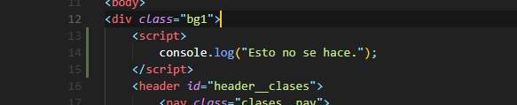Ejemplo 2: Forma correcta
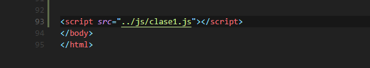¿Que es un script?
Un script es un programa que consta de definiciones de funciones, definiciones de variables y sentencias de programa ejecutable.
¿Que es un sentencia?
En un lenguaje de programación, una sentencia es una línea de código al mando de una tarea. Cada script/programa consiste en una secuencia de sentencias.
Palabras Reservadas
Una palabra reservada es una palabra que tiene un significado gramatical especial y no puede ser utilizada como un identificador de objetos en códigos del mismo, como pueden ser las variables.
Sintaxis de JavaScript
No se tienen en cuenta los espacios en blanco y las nuevas líneas: como sucede con XHTML, el intérprete de JavaScript ignora cualquier espacio en blanco sobrante, por lo que el código se puede ordenar de forma adecuada para entenderlo mejor (tabulando las líneas, añadiendo espacios, creando nuevas líneas, etc.)
Se distinguen las mayúsculas y minúsculas: al igual que sucede con la sintaxis de las etiquetas y elementos XHTML. Sin embargo, si en una página XHTML se utilizan indistintamente mayúsculas y minúsculas, la página se visualiza correctamente, siendo el único problema la no validación de la página. En cambio, si en JavaScript se intercambian mayúsculas y minúsculas el script no funciona.
No se define el tipo de las variables: al crear una variable, no es necesario indicar el tipo de dato que almacenará. De esta forma, una misma variable puede almacenar diferentes tipos de datos durante la ejecución del script.
No es necesario terminar cada sentencia con el carácter de punto y coma (;): en la mayoría de lenguajes de programación, es obligatorio terminar cada sentencia con el carácter ;. Aunque JavaScript no obliga a hacerlo, es conveniente seguir la tradición de terminar cada sentencia con el carácter del punto y coma (;).
Se pueden incluir comentarios: los comentarios se utilizan para añadir información en el código fuente del programa. Aunque el contenido de los comentarios no se visualiza por pantalla, si que se envía al navegador del usuario junto con el resto del script, por lo que es necesario extremar las precauciones sobre la información incluida en los comentarios.
Variables
Una variable es un espacio reservado en la memoria que, como su nombre indica, puede cambiar de contenido a lo largo de la ejecución de un programa. En las variables almacenamos diversos tipos de datos que utilizamos en la aplicación.
Declaracion de Variables
Declarar una variable significa crearla. Para esto usamos la palabra reservada var, let o const. Escribimos una de estas palabras claves seguido del nombre de nuestra variable. Para los nombres no debemos utilizar ni espacios ni caracteres especiales.
Ejemplo 1: Mala practica
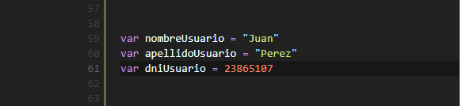Ejemplo 2: Forma correcta
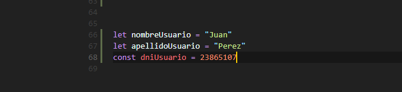Consola
La sentencia console.log() muestra el mensaje que pasemos como parámetro a la llamada en la consola JavaScript del Navegador web.
Específicamente, console.log brinda un tratamiento especial a los elementos del DOM, mientras que console.dir no. Esto es útil a menudo cuando intentas ver la representación completa del objeto JavaScript del DOM.
Ejemplo 1:
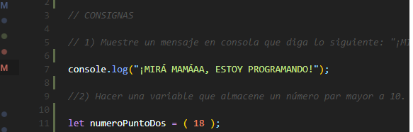Ejemplo 2:
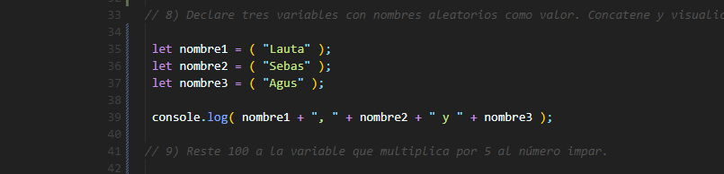Datos Primitivos: Number y String
Podemos asociar distintos valores a una variable en JavaScript. Para empezar trabajaremos con los tipos de datos más comunes, los cuales son las cadenas de texto y los números
Number: un valor numérico puede ser entero o decimal.
String: por otro lado, un string o cadena de texto, es un valor compuesto por uno o más caracteres, definido entre comillas simples o dobles.
Ejemplo de Number:
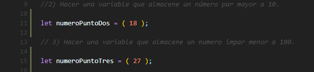Ejemplo de String:
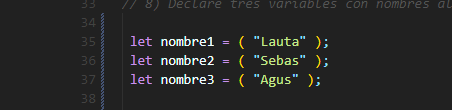Operaciones Aritmeticas
Con variables de valores numéricos podes realizar operaciones matemáticas: sumas, restas, multiplicaciones, etc.
Con variables de tipo string (texto) se puede concatenar los valores, es decir combinarlas.
Ejemplo de operaciones con valores numericos
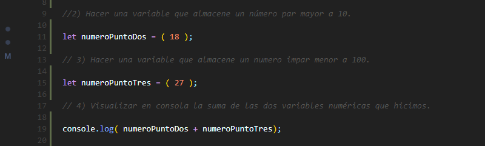Ejemplo de operaciones con valores tipo string
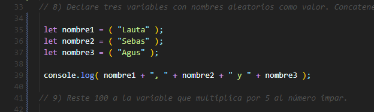Prompt y Alert
Prormpt:La sentencia prompt() mostrará un cuadro de diálogo para que el usuario ingrese un dato. Se puede proporcionar un mensaje que se colocará sobre el campo de texto. El valor que devuelve es una cadena que representa lo que el usuario ingresó.
Alert: La sentencia alert() mostrará una ventana sobre la página web que estemos accediendo mostrando el mensaje que se pase como parámetro a la llamada.
Ejemplo de Prompt
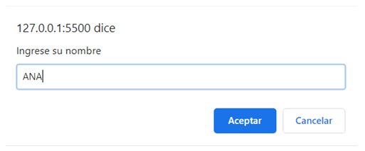Ejemplo de Alert
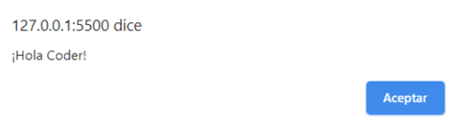